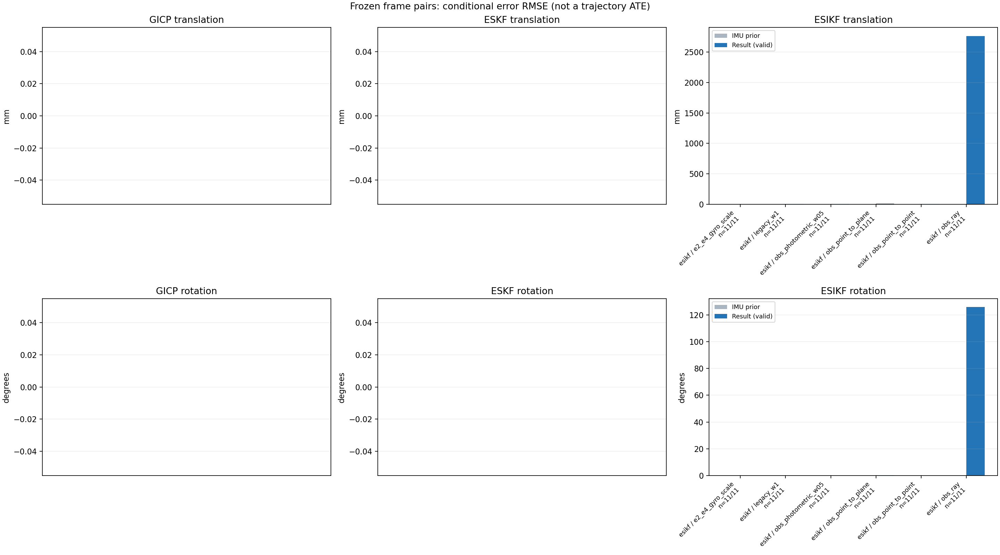

20261015_112845_yaw_left · depth=disparity_cache · cache=334a44243e5ba2bb2c04
模型视差：/home/ubuntu22/slam/SIO_SLAM/models/tensorrt/disp_896x448_fp16.plan；engine SHA256=604cf6ac1f705c877260711730dd5d2d58c2a21f3020c03c668401ef7fb1e768。输入为生产裁剪与光照处理后的 RGB 0..255；此实验使用原始浮点像素视差，不应用完整前端的邻域视差后处理。
原始 ONNX SHA256：e9f49736a65d68d06681add463866b6defdf78fdd7f4f50f6cc941b682fdc0bc。
代价体图改写验证：ONNX Runtime 固定随机特征输入，最大绝对误差 0；该项检查图改写，完整模型精度仍需由录制数据评估。
配准代码版本：744ac2d993ae629b0cc44a3b1d995e04ab4fad48；观测生成版本：744ac2d993ae629b0cc44a3b1d995e04ab4fad48。
固定图像对与纯 IMU 先验；ESKF 回放固定 GICP 观测，ESIKF 直接读取点云。真值只用于此报告。
同时查看 converged 与 solver_status：上游默认 Stereo 在 max_iter / stopped_at_minimum 时也可能置 converged=true。valid 表示输入检查通过，不表示精度提升。欧氏 GICP 未提供独立的点距 RMSE，该列显示 NaN。
误差按每对图像的锚点计算，单位 m / degrees。此处 RMSE 不是全序列 ATE；末帧受同一锚点条件约束。NIS 与条件马氏距离是诊断量，少量相关图像对不能用于宣称协方差已校准。
全部指标 CSV · R / P 矩阵 CSV · Stereo 求解逐轮 CSV · ESIKF 逐轮轨迹 CSV · 末轮 H / R / K_pose 矩阵 CSV · 配置快照 · 矢量图
unflagged 排除纯惯性先验平移误差超过 50 mm 的图像对；whitened 为误差按协方差白化后的每自由度均值，协方差与实际误差相符时约为 1。
| stage | method | variant | valid | total | result_translation_rmse_m | result_rotation_rmse_deg | result_translation_median_m | result_rotation_median_deg | result_translation_rmse_unflagged_m | result_rotation_rmse_unflagged_deg | improved_translation | improved_rotation | posterior_whitened_by_P_rot_mean | posterior_whitened_by_P_trans_mean |
|---|---|---|---|---|---|---|---|---|---|---|---|---|---|---|
| esikf | esikf | e2_e4_gyro_scale | 11 | 11 | 0.0016345 | 0.0099952 | 0.00035717 | 0.0082265 | 0.0016345 | 0.0099952 | 1 | 1 | 1.6661 | 4.3499 |
| esikf | esikf | legacy_w1 | 11 | 11 | 0.0039806 | 0.029137 | 0.0029202 | 0.028103 | 0.0039806 | 0.029137 | 0 | 0 | 7.1811 | 19.793 |
| esikf | esikf | obs_photometric_w05 | 11 | 11 | 0.0045868 | 0.03504 | 0.0029621 | 0.033415 | 0.0045868 | 0.03504 | 0 | 0 | 4.8866 | 13.159 |
| esikf | esikf | obs_point_to_plane | 11 | 11 | 0.009918 | 0.21718 | 0.0072704 | 0.18728 | 0.009918 | 0.21718 | 0 | 0 | 24.267 | 21.375 |
| esikf | esikf | obs_point_to_point | 11 | 11 | 0.0045879 | 0.035045 | 0.0029619 | 0.033454 | 0.0045879 | 0.035045 | 0 | 0 | 9.7794 | 26.323 |
| esikf | esikf | obs_ray | 11 | 11 | 2.7649 | 125.97 | 0.35143 | 123.22 | 2.7649 | 125.97 | 0 | 0 | 115.38 | 84.461 |

| stage | case | method | variant | status | solver_status | inliers | converged | covariance_convention | covariance_from_hessian | fitness | registration_rmse_m | prior_trans_error_m | result_trans_error_m | prior_rot_error_deg | result_rot_error_deg | prior_flagged | R_rot_trace_rad2 | R_pos_trace_m2 | nis_regularized | posterior_whitened_by_P_rot | posterior_whitened_by_P_trans |
|---|---|---|---|---|---|---|---|---|---|---|---|---|---|---|---|---|---|---|---|---|---|
| esikf | static_a096 | esikf | obs_point_to_point | updated | converged | 23284 | 1 | 1 | 0 | 0 | 6.6415e-06 | 0.0039167 | 0.0026972 | 0.041738 | 0 | 4.4848e-08 | 8.7667e-07 | nan | 12.034 | 18.573 | |
| esikf | static_a096 | esikf | obs_photometric_w05 | updated | converged | 23284 | 1 | 1 | 0 | 0 | 6.6415e-06 | 0.0039176 | 0.0026972 | 0.041755 | 0 | 8.9675e-08 | 1.7525e-06 | nan | 6.0214 | 9.2939 | |
| esikf | static_a096 | esikf | obs_ray | updated_not_converged | correspondences_lost | 472 | 0 | 1 | 0 | 0 | 6.6415e-06 | 1.4088 | 0.0026972 | 139.2 | 0 | 0.15142 | 0.15319 | nan | 114.67 | 681.67 | |
| esikf | static_a096 | esikf | obs_point_to_plane | updated_not_converged | max_iterations | 23729 | 0 | 1 | 0 | 0 | 6.6415e-06 | 0.016829 | 0.0026972 | 0.41078 | 0 | 5.1557e-07 | 4.3136e-06 | nan | 77.511 | 52.853 | |
| esikf | static_a096 | esikf | legacy_w1 | updated | converged | 23284 | 1 | 1 | 0 | 0 | 6.6415e-06 | 0.0031501 | 0.0026972 | 0.032131 | 0 | 4.476e-08 | 8.7537e-07 | nan | 7.8642 | 12.314 | |
| esikf | static_a096 | esikf | e2_e4_gyro_scale | updated | converged | 23285 | 1 | 1 | 0 | 0 | 6.6415e-06 | 0.00012236 | 0.0026972 | 0.0079591 | 0 | 4.4701e-08 | 8.6973e-07 | nan | 1.2704 | 0.45369 | |
| esikf | static_a100 | esikf | obs_point_to_point | updated | converged | 23442 | 1 | 1 | 0 | 0 | 1.2518e-05 | 0.0028756 | 0.0045503 | 0.033454 | 0 | 4.4293e-08 | 8.3584e-07 | nan | 6.426 | 10.249 | |
| esikf | static_a100 | esikf | obs_photometric_w05 | updated | converged | 23442 | 1 | 1 | 0 | 0 | 1.2518e-05 | 0.0028732 | 0.0045503 | 0.033415 | 0 | 8.8558e-08 | 1.6707e-06 | nan | 3.2082 | 5.1203 | |
| esikf | static_a100 | esikf | obs_ray | updated_not_converged | correspondences_lost | 145 | 0 | 1 | 0 | 0 | 1.2518e-05 | 0.20473 | 0.0045503 | 123.22 | 0 | 0.64379 | 0.046861 | nan | 49.891 | 27.814 | |
| esikf | static_a100 | esikf | obs_point_to_plane | updated | converged | 23513 | 1 | 1 | 0 | 0 | 1.2518e-05 | 0.0071572 | 0.0045503 | 0.087719 | 0 | 5.0506e-07 | 4.4667e-06 | nan | 3.611 | 11.482 | |
| esikf | static_a100 | esikf | legacy_w1 | updated | converged | 23450 | 1 | 1 | 0 | 0 | 1.2518e-05 | 0.0023071 | 0.0045503 | 0.028103 | 0 | 4.4108e-08 | 8.2825e-07 | nan | 4.2755 | 6.5003 | |
| esikf | static_a100 | esikf | e2_e4_gyro_scale | updated | converged | 23449 | 1 | 1 | 0 | 0 | 1.2518e-05 | 9.3204e-05 | 0.0045503 | 0.0051415 | 0 | 4.4069e-08 | 8.2921e-07 | nan | 0.58464 | 0.24295 | |
| esikf | static_a104 | esikf | obs_point_to_point | updated_not_converged | max_iterations | 23762 | 0 | 1 | 0 | 0 | 2.9892e-05 | 0.010382 | 0.0021017 | 0.050508 | 0 | 4.254e-08 | 7.6862e-07 | nan | 28.814 | 138.82 | |
| esikf | static_a104 | esikf | obs_photometric_w05 | updated_not_converged | max_iterations | 23762 | 0 | 1 | 0 | 0 | 2.9892e-05 | 0.010383 | 0.0021017 | 0.050529 | 0 | 8.5053e-08 | 1.5363e-06 | nan | 14.417 | 69.475 | |
| esikf | static_a104 | esikf | obs_ray | updated_not_converged | correspondences_lost | 974 | 0 | 1 | 0 | 0 | 2.9892e-05 | 0.033586 | 0.0021017 | 87.642 | 0 | 0.02573 | 0.00055871 | nan | 263.16 | 28.81 | |
| esikf | static_a104 | esikf | obs_point_to_plane | updated | converged | 23828 | 1 | 1 | 0 | 0 | 2.9892e-05 | 0.012362 | 0.0021017 | 0.22265 | 0 | 5.0009e-07 | 4.1189e-06 | nan | 24.186 | 42.285 | |
| esikf | static_a104 | esikf | legacy_w1 | updated | converged | 23702 | 1 | 1 | 0 | 0 | 2.9892e-05 | 0.0095767 | 0.0021017 | 0.04612 | 0 | 4.2634e-08 | 7.7137e-07 | nan | 24.25 | 117.71 | |
| esikf | static_a104 | esikf | e2_e4_gyro_scale | updated | converged | 23401 | 1 | 1 | 0 | 0 | 2.9892e-05 | 0.00030055 | 0.0021017 | 0.0082265 | 0 | 4.4164e-08 | 8.2792e-07 | nan | 1.2738 | 1.8787 | |
| esikf | static_a108 | esikf | obs_point_to_point | updated_not_converged | max_iterations | 23503 | 0 | 1 | 0 | 0 | 6.278e-05 | 0.0045858 | 0.0044497 | 0.043919 | 0 | 4.4058e-08 | 8.2635e-07 | nan | 15.436 | 25.353 | |
| esikf | static_a108 | esikf | obs_photometric_w05 | updated_not_converged | max_iterations | 23500 | 0 | 1 | 0 | 0 | 6.278e-05 | 0.0045727 | 0.0044497 | 0.043807 | 0 | 8.8189e-08 | 1.6557e-06 | nan | 7.6797 | 12.576 | |
| esikf | static_a108 | esikf | obs_ray | updated_not_converged | correspondences_lost | 415 | 0 | 1 | 0 | 0 | 6.278e-05 | 0.26008 | 0.0044497 | 133.55 | 0 | 0.12171 | 0.0060977 | nan | 233.43 | 36.959 | |
| esikf | static_a108 | esikf | obs_point_to_plane | updated_not_converged | max_iterations | 23705 | 0 | 1 | 0 | 0 | 6.278e-05 | 0.0072549 | 0.0044497 | 0.22916 | 0 | 5.3241e-07 | 4.447e-06 | nan | 23.632 | 10.202 | |
| esikf | static_a108 | esikf | legacy_w1 | updated | converged | 23418 | 1 | 1 | 0 | 0 | 6.278e-05 | 0.0029202 | 0.0044497 | 0.025555 | 0 | 4.4611e-08 | 8.4643e-07 | nan | 7.741 | 10.08 | |
| esikf | static_a108 | esikf | e2_e4_gyro_scale | updated | converged | 23418 | 1 | 1 | 0 | 0 | 6.278e-05 | 0.00042674 | 0.0044497 | 0.011903 | 0 | 4.4567e-08 | 8.444e-07 | nan | 3.4136 | 2.2774 | |
| esikf | static_a112 | esikf | obs_point_to_point | updated | converged | 23543 | 1 | 1 | 0 | 0 | 9.7875e-05 | 0.0021503 | 0.0060242 | 0.026225 | 0 | 4.4085e-08 | 8.5881e-07 | nan | 5.5356 | 6.9043 | |
| esikf | static_a112 | esikf | obs_photometric_w05 | updated | converged | 23543 | 1 | 1 | 0 | 0 | 9.7875e-05 | 0.0021508 | 0.0060242 | 0.026231 | 0 | 8.8145e-08 | 1.7166e-06 | nan | 2.7692 | 3.454 | |
| esikf | static_a112 | esikf | obs_ray | updated_not_converged | correspondences_lost | 135 | 0 | 1 | 0 | 0 | 9.7875e-05 | 0.35143 | 0.0060242 | 171.76 | 0 | 2.3406 | 0.040221 | nan | 31.034 | 12.495 | |
| esikf | static_a112 | esikf | obs_point_to_plane | updated_not_converged | max_iterations | 23577 | 0 | 1 | 0 | 0 | 9.7875e-05 | 0.0071116 | 0.0060242 | 0.1325 | 0 | 5.2784e-07 | 4.704e-06 | nan | 8.7456 | 10.262 | |
| esikf | static_a112 | esikf | legacy_w1 | updated | converged | 23545 | 1 | 1 | 0 | 0 | 9.7875e-05 | 0.0018195 | 0.0060242 | 0.023985 | 0 | 4.3938e-08 | 8.528e-07 | nan | 4.266 | 4.9652 | |
| esikf | static_a112 | esikf | e2_e4_gyro_scale | updated | converged | 23549 | 1 | 1 | 0 | 0 | 9.7875e-05 | 0.00035989 | 0.0060242 | 0.0028349 | 0 | 4.385e-08 | 8.4756e-07 | nan | 0.24182 | 1.2801 | |
| esikf | static_a116 | esikf | obs_point_to_point | updated | converged | 23452 | 1 | 1 | 0 | 0 | 0.00014863 | 0.0022971 | 0.0029649 | 0.036617 | 0 | 4.4424e-08 | 8.2876e-07 | nan | 7.4864 | 7.4106 | |
| esikf | static_a116 | esikf | obs_photometric_w05 | updated | converged | 23452 | 1 | 1 | 0 | 0 | 0.00014863 | 0.0022975 | 0.0029649 | 0.036607 | 0 | 8.8825e-08 | 1.6567e-06 | nan | 3.7417 | 3.7077 | |
| esikf | static_a116 | esikf | obs_ray | updated_not_converged | correspondences_lost | 58 | 0 | 1 | 0 | 0 | 0.00014863 | 7.7664 | 0.0029649 | 100.07 | 0 | 12.933 | 1.7515 | nan | 2.7839 | 13.362 | |
| esikf | static_a116 | esikf | obs_point_to_plane | updated_not_converged | max_iterations | 23453 | 0 | 1 | 0 | 0 | 0.00014863 | 0.0096048 | 0.0029649 | 0.28998 | 0 | 4.8306e-07 | 4.438e-06 | nan | 41.219 | 26.359 | |
| esikf | static_a116 | esikf | legacy_w1 | updated | converged | 23465 | 1 | 1 | 0 | 0 | 0.00014863 | 0.0018447 | 0.0029649 | 0.032564 | 0 | 4.4149e-08 | 8.153e-07 | nan | 5.9149 | 4.8566 | |
| esikf | static_a116 | esikf | e2_e4_gyro_scale | updated | converged | 23459 | 1 | 1 | 0 | 0 | 0.00014863 | 0.00035717 | 0.0029649 | 0.0086793 | 0 | 4.4223e-08 | 8.2079e-07 | nan | 2.1692 | 0.76297 | |
| esikf | static_a120 | esikf | obs_point_to_point | updated | converged | 23306 | 1 | 1 | 0 | 0 | 0.00016667 | 0.00093201 | 0.0023235 | 0.015628 | 0 | 4.5107e-08 | 8.5678e-07 | nan | 1.3693 | 1.1559 | |
| esikf | static_a120 | esikf | obs_photometric_w05 | updated | converged | 23306 | 1 | 1 | 0 | 0 | 0.00016667 | 0.00093145 | 0.0023235 | 0.015613 | 0 | 9.0182e-08 | 1.7125e-06 | nan | 0.68333 | 0.57721 | |
| esikf | static_a120 | esikf | obs_ray | updated_not_converged | correspondences_lost | 316 | 0 | 1 | 0 | 0 | 0.00016667 | 0.043919 | 0.0023235 | 84.361 | 0 | 0.0318 | 0.0014299 | nan | 120.05 | 17.904 | |
| esikf | static_a120 | esikf | obs_point_to_plane | updated_not_converged | max_iterations | 23593 | 0 | 1 | 0 | 0 | 0.00016667 | 0.0047225 | 0.0023235 | 0.1706 | 0 | 5.4476e-07 | 4.5805e-06 | nan | 14.813 | 6.3332 | |
| esikf | static_a120 | esikf | legacy_w1 | updated | converged | 23308 | 1 | 1 | 0 | 0 | 0.00016667 | 0.00085361 | 0.0023235 | 0.015554 | 0 | 4.5098e-08 | 8.5648e-07 | nan | 1.3429 | 0.96195 | |
| esikf | static_a120 | esikf | e2_e4_gyro_scale | updated | converged | 23308 | 1 | 1 | 0 | 0 | 0.00016667 | 0.00012532 | 0.0023235 | 0.0042304 | 0 | 4.5097e-08 | 8.5647e-07 | nan | 0.57022 | 0.057623 | |
| esikf | static_a124 | esikf | obs_point_to_point | updated | converged | 23426 | 1 | 1 | 0 | 0 | 0.00020303 | 0.0003927 | 0.0022658 | 0.029156 | 0 | 4.4241e-08 | 8.4211e-07 | nan | 7.528 | 0.17557 | |
| esikf | static_a124 | esikf | obs_photometric_w05 | updated | converged | 23426 | 1 | 1 | 0 | 0 | 0.00020303 | 0.00039172 | 0.0022658 | 0.029158 | 0 | 8.8456e-08 | 1.6833e-06 | nan | 3.7646 | 0.087373 | |
| esikf | static_a124 | esikf | obs_ray | updated_not_converged | correspondences_lost | 237 | 0 | 1 | 0 | 0 | 0.00020303 | 0.74517 | 0.0022658 | 171.95 | 0 | 1.8702 | 0.052211 | nan | 94.053 | 31.058 | |
| esikf | static_a124 | esikf | obs_point_to_plane | updated | converged | 23481 | 1 | 1 | 0 | 0 | 0.00020303 | 0.00087136 | 0.0022658 | 0.07066 | 0 | 5.009e-07 | 4.667e-06 | nan | 2.239 | 0.37515 | |
| esikf | static_a124 | esikf | legacy_w1 | updated | converged | 23426 | 1 | 1 | 0 | 0 | 0.00020303 | 0.00039663 | 0.0022658 | 0.028718 | 0 | 4.4241e-08 | 8.4209e-07 | nan | 7.2217 | 0.17818 | |
| esikf | static_a124 | esikf | e2_e4_gyro_scale | updated | converged | 23426 | 1 | 1 | 0 | 0 | 0.00020303 | 0.00031105 | 0.0022658 | 0.0066063 | 0 | 4.4241e-08 | 8.4207e-07 | nan | 0.72481 | 0.48775 | |
| esikf | static_g128 | esikf | obs_point_to_point | updated | converged | 23585 | 1 | 1 | 0 | 0 | 0.0016017 | 0.0029619 | 0.0017689 | 0.014085 | 0 | 4.3984e-08 | 8.2585e-07 | nan | 0.98223 | 9.2019 | |
| esikf | static_g128 | esikf | obs_photometric_w05 | updated | converged | 23585 | 1 | 1 | 0 | 0 | 0.0016017 | 0.0029621 | 0.0017689 | 0.014081 | 0 | 8.795e-08 | 1.651e-06 | nan | 0.49097 | 4.603 | |
| esikf | static_g128 | esikf | obs_ray | updated_not_converged | correspondences_lost | 90 | 0 | 1 | 0 | 0 | 0.0016017 | 4.5251 | 0.0017689 | 146.97 | 0 | 185.2 | 8.347 | nan | 3.6381 | 3.1699 | |
| esikf | static_g128 | esikf | obs_point_to_plane | updated | converged | 23686 | 1 | 1 | 0 | 0 | 0.0016017 | 0.0072704 | 0.0017689 | 0.05963 | 0 | 4.9615e-07 | 4.3243e-06 | nan | 3.6431 | 8.6877 | |
| esikf | static_g128 | esikf | legacy_w1 | updated | converged | 23585 | 1 | 1 | 0 | 0 | 0.0016017 | 0.002935 | 0.0017689 | 0.013388 | 0 | 4.3946e-08 | 8.2463e-07 | nan | 0.85867 | 9.0365 | |
| esikf | static_g128 | esikf | e2_e4_gyro_scale | updated | converged | 23581 | 1 | 1 | 0 | 0 | 0.0016017 | 0.0027507 | 0.0017689 | 0.014125 | 0 | 4.4039e-08 | 8.2917e-07 | nan | 1.1696 | 8.5797 | |
| esikf | static_g136 | esikf | obs_point_to_point | updated | converged | 23416 | 1 | 1 | 0 | 0 | 0.0019643 | 0.0031851 | 0.012045 | 0.028076 | 0 | 4.3526e-08 | 8.2413e-07 | nan | 6.6796 | 13.828 | |
| esikf | static_g136 | esikf | obs_photometric_w05 | updated | converged | 23416 | 1 | 1 | 0 | 0 | 0.0019643 | 0.0031846 | 0.012045 | 0.028075 | 0 | 8.7022e-08 | 1.6471e-06 | nan | 3.3397 | 6.9153 | |
| esikf | static_g136 | esikf | obs_ray | updated_not_converged | correspondences_lost | 228 | 0 | 1 | 0 | 0 | 0.0019643 | 0.72155 | 0.012045 | 103.17 | 0 | 0.051682 | 0.02476 | nan | 136.54 | 68.495 | |
| esikf | static_g136 | esikf | obs_point_to_plane | updated_not_converged | max_iterations | 23462 | 0 | 1 | 0 | 0 | 0.0019643 | 0.012905 | 0.012045 | 0.18728 | 0 | 5.3113e-07 | 4.3811e-06 | nan | 35.801 | 26.829 | |
| esikf | static_g136 | esikf | legacy_w1 | updated | converged | 23416 | 1 | 1 | 0 | 0 | 0.0019643 | 0.003143 | 0.012045 | 0.027764 | 0 | 4.3529e-08 | 8.2424e-07 | nan | 6.5415 | 13.485 | |
| esikf | static_g136 | esikf | e2_e4_gyro_scale | updated | converged | 23414 | 1 | 1 | 0 | 0 | 0.0019643 | 0.0024227 | 0.012045 | 0.016217 | 0 | 4.3583e-08 | 8.2612e-07 | nan | 5.1819 | 11.831 | |
| esikf | static_g144 | esikf | obs_point_to_point | updated_not_converged | max_iterations | 23348 | 0 | 1 | 0 | 0 | 0.0024651 | 0.0070189 | 0.0046732 | 0.045379 | 0 | 4.3866e-08 | 8.1176e-07 | nan | 15.282 | 57.874 | |
| esikf | static_g144 | esikf | obs_photometric_w05 | updated_not_converged | max_iterations | 23345 | 0 | 1 | 0 | 0 | 0.0024651 | 0.0070185 | 0.0046732 | 0.045444 | 0 | 8.7718e-08 | 1.623e-06 | nan | 7.6367 | 28.942 | |
| esikf | static_g144 | esikf | obs_ray | updated_not_converged | correspondences_lost | 559 | 0 | 1 | 0 | 0 | 0.0024651 | 0.056575 | 0.0046732 | 77.631 | 0 | 0.022803 | 0.00056374 | nan | 219.89 | 7.3391 | |
| esikf | static_g144 | esikf | obs_point_to_plane | updated | converged | 23508 | 1 | 1 | 0 | 0 | 0.0024651 | 0.012524 | 0.0046732 | 0.25678 | 0 | 5.0268e-07 | 4.4756e-06 | nan | 31.536 | 39.459 | |
| esikf | static_g144 | esikf | legacy_w1 | updated | converged | 23357 | 1 | 1 | 0 | 0 | 0.0024651 | 0.00572 | 0.0046732 | 0.032926 | 0 | 4.3921e-08 | 8.1773e-07 | nan | 8.7163 | 37.639 | |
| esikf | static_g144 | esikf | e2_e4_gyro_scale | updated | converged | 23353 | 1 | 1 | 0 | 0 | 0.0024651 | 0.0039096 | 0.0046732 | 0.01387 | 0 | 4.4153e-08 | 8.2717e-07 | nan | 1.7269 | 19.997 |